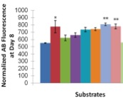
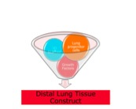

{% include head.html %}    

{% include menu.html %}	

{% include footer.html %} class="imageStyle" alt="Aybike BW1" src="files/aybike-bw1.jpg" width="180" height="135"/><span style="font:15px Calibri; "><br /></span><p style="text-align:justify;"><span style="font:15px Arial, Verdana, Helvetica, sans-serif; font-weight:bold; color:#608B32;font-weight:bold; "><br />CURRENT RESEARCH<br /></span><span style="font:15px Calibri; "><br /></span><a href=#1><span style="font:15px Calibri; ">RESEARCH BY RESEARCHERS</span></a><span style="font:15px Calibri; "><br /></span><a href=#2><span style="font:15px Calibri; ">RESEARCH BY TOPICS</span></a><span style="font:15px Calibri; "><br /></span></p><p><br /><a name=1></a><span style="font:15px Calibri-Bold; font-weight:bold; font-weight:bold; ">RESEARCH BY RESEARCHERS</span><span style="font:15px Calibri; "><br /><br /></span><span style="font:16px Calibri; ">Tissue Engineering</span><span style="font:15px Calibri; "><br /></span><ul class="disc"><li><span style="font:15px Calibri; ">Bone Tissue Engineering  </span><span style="font:13px Calibri; ">&nbsp;&nbsp;&nbsp;&nbsp; </span><span style="font:15px Calibri; ">[</span><span style="font:15px Calibri; "><a href="assets/Sean_ShortBio for web.pdf" rel="self">Sean Devlin</a></span><span style="font:15px Calibri; "> | </span><span style="font:15px Calibri; "><a href="assets/FAllen Rsrch Publs for web.pdf" rel="self">Fred Allen</a></span><span style="font:15px Calibri; ">]</span></li><li><span style="font:15px Calibri; ">Liver Tissue Engineering   </span><span style="font:13px Calibri; ">&nbsp;&nbsp;&nbsp;&nbsp;  </span><span style="font:15px Calibri; ">[</span><span style="font:15px Calibri; "><a href="http://www.mem.drexel.edu/zhou2/people/" rel="self">P. Haibo Gong</a></span><span style="font:15px Calibri; ">]</span></li><li><span style="font:15px Calibri; ">Skin </span><span style="font:13px Calibri; ">&nbsp;&nbsp;&nbsp;&nbsp; </span><span style="font:15px Calibri; ">[</span><span style="font:15px Calibri; "><a href="assets/E_Papazoglou Research for Web.pdf" rel="self">Elizabeth Papazoglou </a></span><span style="font:15px Calibri; ">| </span><span style="font:15px Calibri; "><a href="assets/LL Research for Web.pdf" rel="self">Leko Lin</a></span><span style="font:15px Calibri; "> ]</span></li><li><span style="font:15px Calibri; ">Heart </span><span style="font:13px Calibri; ">&nbsp;&nbsp;&nbsp;&nbsp; </span><span style="font:15px Calibri; ">[</span><span style="font:15px Calibri; "><a href="assets/Gozde_ShortBio for Web.pdf" rel="self">Gozde Senel</a></span><span style="font:15px Calibri; ">]</span></li><li><span style="font:15px Calibri; ">Lung  </span><span style="font:13px Calibri; ">&nbsp;&nbsp;&nbsp;&nbsp; </span><span style="font:15px Calibri; ">[</span><span style="font:15px Calibri; "><a href="assets/Collin Resrch for web.pdf" rel="self">Collin Stabler</a></span><span style="font:15px Calibri; "> | </span><span style="font:15px Calibri; "><a href="assets/Mie Research for Web.pdf" rel="self">Pimchanok Pimton</a></span><span style="font:15px Calibri; "> | </span><span style="font:15px Calibri; "><a href="assets/Seda ShortResrch for web.pdf" rel="self">Seda Karamil</a></span><span style="font:15px Calibri; ">]</span></li><li><span style="font:15px Calibri; ">Spinal cord </span><span style="font:13px Calibri; ">&nbsp;&nbsp;&nbsp;&nbsp; </span><span style="font:15px Calibri; ">[</span><span style="font:15px Calibri; "><a href="assets/Anat_Poster.pdf" rel="self">Anat Perets</a></span><span style="font:15px Calibri; "> | </span><span style="font:15px Calibri; "><a href="assets/Aybike ShortBio for Web" rel="self">Aybike Seglam</a></span><span style="font:15px Calibri; "> | </span><span style="font:15px Calibri; "><a href="assets/Tim C Research for Web.pdf" rel="self">Timothy Connors</a></span><span style="font:15px Calibri; "> | </span><span style="font:15px Calibri; "><a href="assets/Gaurav Research for Web.pdf" rel="self">Gaurav Goyal</a></span><span style="font:15px Calibri; ">]</span></li><li><span style="font:15px Calibri; ">Blood Vessel </span><span style="font:13px Calibri; ">&nbsp;&nbsp;&nbsp;&nbsp; </span><span style="font:15px Calibri; ">[</span><span style="font:15px Calibri; "><a href="assets/Anat_Poster.pdf" rel="self">Anat Perets</a></span><span style="font:15px Calibri; ">]</span><span style="font:13px Calibri; "> </span></li><li><span style="font:15px Calibri; ">Brain </span><span style="font:13px Calibri; ">&nbsp;&nbsp;&nbsp;&nbsp; </span><span style="font:15px Calibri; ">[</span><span style="font:15px Calibri; "><a href="assets/Philip Research for web 7 5 10.pdf" rel="self">Philip Lazarovici</a></span><span style="font:15px Calibri; ">]</span><span style="font:13px Calibri; "> </span></li><li><span style="font:15px Calibri; ">Thymus </span><span style="font:13px Calibri; ">&nbsp;&nbsp;&nbsp;&nbsp; </span><span style="font:15px Calibri; ">[</span><span style="font:15px Calibri; "><a href="assets/Jessica ShortBio for Web.pdf" rel="self">Jessica Falcon</a></span><span style="font:15px Calibri; ">]</span></li></ul><span style="font:16px Calibri; ">Biomaterials and Scaffolds  </span><span style="font:15px Calibri; "><br /></span><ul class="disc"><li><span style="font:15px Calibri; ">Hydrogels </span><span style="font:13px Calibri; ">&nbsp;&nbsp;&nbsp;&nbsp; </span><span style="font:15px Calibri; ">[</span><span style="font:15px Calibri; "><a href="assets/Aybike ShortBio for Web" rel="self">Aybike Seglam</a></span><span style="font:15px Calibri; "> | </span><span style="font:15px Calibri; "><a href="assets/Anat_Poster.pdf" rel="self">Anat Perets</a></span><span style="font:15px Calibri; "> | </span><span style="font:15px Calibri; "><a href="assets/Philip_Research for web.pdf" rel="self">Philip Lazarovici</a></span><span style="font:15px Calibri; "> |</span><span style="font:15px Calibri; "><a href="assets/Qingwei Research for Web.pdf" rel="self">Qingwei Zhang</a></span><span style="font:15px Calibri; "> | </span><span style="font:15px Calibri; "><a href="assets/Tim C Research for Web.pdf" rel="self">Timothy Connors</a></span><span style="font:15px Calibri; ">] </span></li><li><span style="font:15px Calibri; ">Natural ECM Protein</span></li><li><span style="font:15px Calibri; ">Controlled Freezing </span><span style="font:13px Calibri; ">&nbsp;&nbsp;&nbsp;&nbsp; </span><span style="font:15px Calibri; ">[</span><span style="font:15px Calibri; "><a href="assets/Aybike ShortBio for Web" rel="self">Aybike Seglam</a></span><span style="font:15px Calibri; "> | </span><span style="font:15px Calibri; "><a href="assets/Anat_Bio_Publications for web.pdf" rel="self">Anat Perets</a></span><span style="font:15px Calibri; "> | </span><span style="font:15px Calibri; "><a href="assets/Qingwei Research for Web.pdf" rel="self">Qingwei Zhang</a></span><span style="font:15px Calibri; ">] </span></li><li><span style="font:15px Calibri; ">Electrospinning </span><span style="font:13px Calibri; ">&nbsp;&nbsp;&nbsp;&nbsp; </span><span style="font:15px Calibri; ">[</span><span style="font:15px Calibri; "><a href="assets/Mike Resrch for Web.pdf" rel="self">Mike Frohbergh</a></span><span style="font:15px Calibri; "> | </span><span style="font:15px Calibri; "><a href="assets/JH Research for web.pdf" rel="self">Jingjia Han</a></span><span style="font:15px Calibri; "> | </span><span style="font:15px Calibri; "><a href="assets/LL Research for Web.pdf" rel="self">Leko Lin</a></span><span style="font:15px Calibri; "> | </span><span style="font:15px Calibri; "><a href="assets/Vy_Research for web.pdf" rel="self">Vy Nguyen</a></span><span style="font:15px Calibri; "> | </span><span style="font:15px Calibri; "><a href="assets/AKatsman_Research for web.pdf" rel="self">Anna Katsman</a></span><span style="font:15px Calibri; ">]</span></li></ul><span style="font:16px Calibri; ">Stem Cells Differentiation</span><span style="font:15px Calibri; "><br /></span><ul class="disc"><li><span style="font:15px Calibri; ">Endoderm/Lung </span><span style="font:13px Calibri; ">&nbsp;&nbsp;&nbsp;&nbsp; </span><span style="font:15px Calibri; ">[</span><span style="font:15px Calibri; "><a href="assets/Mie Research for Web.pdf" rel="self">Pimchanok Pimton</a></span><span style="font:15px Calibri; "> |</span><span style="font:15px Calibri; "><a href="assets/Philip Research for web 7 5 10.pdf" rel="self">Philip Lazarovici</a></span><span style="font:15px Calibri; ">]</span></li><li><span style="font:15px Calibri; ">Mesoderm/Cardiac, Vascular, Hematopoietic, Musculoskeletal </span><span style="font:13px Calibri; ">&nbsp;&nbsp;&nbsp;&nbsp; </span><span style="font:15px Calibri; ">[</span><span style="font:15px Calibri; "><a href="assets/Gozde_ShortBio for Web.pdf" rel="self">Gozde Senel </a></span><span style="font:15px Calibri; ">| </span><span style="font:15px Calibri; "><a href="assets/Tracy Research for web.pdf" rel="self">Tracy Zhu</a></span><span style="font:15px Calibri; "> |</span><span style="font:15px Calibri; "><a href="assets/JH Research for web.pdf" rel="self"> Jingjia Han</a></span><span style="font:15px Calibri; "> | </span><span style="font:15px Calibri; "><a href="assets/Anat_Poster.pdf" rel="self">Anat Perets </a></span><span style="font:15px Calibri; ">| </span><span style="font:15px Calibri; "><a href="assets/Sean_ShortBio for web.pdf" rel="self">Sean Devlin</a></span><span style="font:15px Calibri; "> | </span><span style="font:15px Calibri; "><a href="assets/FAllen Rsrch Publs for web.pdf" rel="self">Fred Allen</a></span><span style="font:15px Calibri; ">]</span></li><li><span style="font:15px Calibri; ">Ectoderm/Neural </span><span style="font:13px Calibri; ">&nbsp;&nbsp;&nbsp;&nbsp; </span><span style="font:15px Calibri; ">[</span><span style="font:15px Calibri; "><a href="assets/Philip Research for web 7 5 10.pdf" rel="self">Philip Lazarovici</a></span><span style="font:15px Calibri; "> | </span><span style="font:15px Calibri; "><a href="assets/Gaurav Research for Web.pdf" rel="self">Gaurav Goyal</a></span><span style="font:15px Calibri; ">]  </span></li><li><span style="font:15px Calibri; ">Umbilical Cord Blood [</span><span style="font:15px Calibri; "><a href="assets/Philip Research for web 7 5 10.pdf" rel="self">Philip Lazarovici</a></span><span style="font:15px Calibri; ">]</span></li></ul><span style="font:16px Calibri; ">Cancer Research</span><span style="font:15px Calibri; "><br /></span><ul class="disc"><li><span style="font:15px Calibri; ">Neuroblastoma  </span><span style="font:13px Calibri; ">&nbsp;&nbsp;&nbsp;&nbsp; </span><span style="font:15px Calibri; ">[</span><span style="font:15px Calibri; "><a href="assets/GregResearch for web.pdf" rel="self">Gregory Botta</a></span><span style="font:15px Calibri; "> | </span><span style="font:15px Calibri; "><a href="assets/Robert_Research for web.pdf" rel="self">Rob Redden</a></span><span style="font:15px Calibri; ">]</span></li><li><span style="font:15px Calibri; ">Pancreatic Invasion in a 3-D Model  </span><span style="font:13px Calibri; ">&nbsp;&nbsp;&nbsp;&nbsp; </span><span style="font:15px Calibri; ">[</span><span style="font:15px Calibri; "><a href="assets/GregResearch for web.pdf" rel="self">Gregory Botta</a></span><span style="font:15px Calibri; ">]</span></li><li><span style="font:15px Calibri; ">Radiogenic Breast Cancer </span><span style="font:13px Calibri; ">&nbsp;&nbsp;&nbsp;&nbsp; </span><span style="font:15px Calibri; ">[</span><span style="font:15px Calibri; "><a href="assets/DKeene Research for Web.pdf" rel="self">Diane Keene</a></span><span style="font:15px Calibri; ">]</span></li><li><span style="font:15px Calibri; ">Carcinoma </span><span style="font:13px Calibri; ">&nbsp;&nbsp;&nbsp;&nbsp; </span><span style="font:15px Calibri; ">[</span><span style="font:15px Calibri; "><a href="assets/Philip Research for web 7 5 10.pdf" rel="self">Philip Lazarovici</a></span><span style="font:15px Calibri; ">]</span><span style="font:13px Calibri; "> </span></li></ul><span style="font:15px Calibri; "><br /></span><span style="font:15px Calibri; "><a href=#top>Back to the top</a><br /><br /></span><span style="font:15px Calibri; "><br /></span><a name=2></a><span style="font:15px Calibri-Bold; font-weight:bold; font-weight:bold; ">RESEARCH BY TOPICS</span><span style="font:15px Calibri; ">	<br /></span><span style="font:15px Calibri; "><br /></span><ul class="disc"><li><span style="font:15px Calibri; ">Anat Perets  </span><span style="font:13px Calibri; ">&nbsp;&nbsp;&nbsp;&nbsp; </span><span style="font:15px Calibri; ">[</span><span style="font:15px Calibri; "><a href="assets/Anat_Poster.pdf" rel="self">LCL grafts, Vascular tissue</a></span><span style="font:15px Calibri; ">, Spinal cord]</span></li><li><span style="font:15px Calibri; ">Anna Katsman </span><span style="font:13px Calibri; ">&nbsp;&nbsp;&nbsp;&nbsp; </span><span style="font:15px Calibri; ">[</span><span style="font:15px Calibri; "><a href="assets/AKatsman_Research for web.pdf" rel="self">Chitozan scaffolds</a></span><span style="font:15px Calibri; ">]</span></li><li><span style="font:15px Calibri; ">Aybike Seglam </span><span style="font:13px Calibri; ">&nbsp;&nbsp;&nbsp;&nbsp; </span><span style="font:15px Calibri; ">[</span><span style="font:15px Calibri; "><a href="assets/Aybike ShortBio for Web" rel="self">Spinal cord</a></span><span style="font:15px Calibri; ">, Controlled freezing, Ectoderm]</span></li><li><span style="font:15px Calibri; ">Collin Stabler </span><span style="font:13px Calibri; ">&nbsp;&nbsp;&nbsp;&nbsp; </span><span style="font:15px Calibri; ">[</span><span style="font:15px Calibri; "><a href="assets/Collin Resrch for web.pdf" rel="self">Lung tissue engineering</a></span><span style="font:15px Calibri; ">]</span></li><li><span style="font:15px Calibri; ">Diane Keene </span><span style="font:13px Calibri; ">&nbsp;&nbsp;&nbsp;&nbsp; </span><span style="font:15px Calibri; ">[</span><span style="font:15px Calibri; "><a href="assets/DKeene Research for Web.pdf" rel="self">Radiogenic breast cancer</a></span><span style="font:15px Calibri; ">]</span></li><li><span style="font:15px Calibri; ">Elisabeth Papazoglou </span><span style="font:13px Calibri; ">&nbsp;&nbsp;&nbsp;&nbsp; </span><span style="font:15px Calibri; ">[</span><span style="font:15px Calibri; "><a href="assets/E_Papazoglou Research for Web.pdf" rel="self">Wound healing</a></span><span style="font:15px Calibri; ">]</span></li><li><span style="font:15px Calibri; ">Fred Allen </span><span style="font:13px Calibri; ">&nbsp;&nbsp;&nbsp;&nbsp; </span><span style="font:15px Calibri; ">[</span><span style="font:15px Calibri; "><a href="assets/FAllen Rsrch Publs for web.pdf" rel="self">Cell engineering, Cell behavior</a></span><span style="font:15px Calibri; "> | </span><span style="font:15px Calibri; "><a href="assets/FAllen Rsrch Publs for web.pdf" rel="self">Vascular cellular tissue engineering</a></span><span style="font:15px Calibri; ">]</span></li><li><span style="font:15px Calibri; ">Gaurav Goyal </span><span style="font:13px Calibri; ">&nbsp;&nbsp;&nbsp;&nbsp; </span><span style="font:15px Calibri; ">[</span><span style="font:15px Calibri; "><a href="assets/Gaurav Research for Web.pdf" rel="self">spinal cord, neural implant</a></span><span style="font:15px Calibri; ">] </span></li><li><span style="font:15px Calibri; ">Gozde Senel </span><span style="font:13px Calibri; ">&nbsp;&nbsp;&nbsp;&nbsp; </span><span style="font:15px Calibri; ">[</span><span style="font:15px Calibri; "><a href="assets/Gozde_ShortBio for Web.pdf" rel="self">Bionanotextile, Scaffolds, Cardiac, Lung</a></span><span style="font:15px Calibri; ">]</span></li><li><span style="font:15px Calibri; ">Gregory Botta  </span><span style="font:13px Calibri; ">&nbsp;&nbsp;&nbsp;&nbsp; </span><span style="font:15px Calibri; ">[</span><span style="font:15px Calibri; "><a href="assets/GregResearch for web.pdf" rel="self">Pancreatic cancer</a></span><span style="font:15px Calibri; ">, Neuroblastoma]</span></li><li><span style="font:15px Calibri; ">Jessica Falcon</span><span style="font:13px Calibri; ">&nbsp;&nbsp;&nbsp;&nbsp; </span><span style="font:15px Calibri; ">[</span><span style="font:15px Calibri; "><a href="assets/Jessica ShortBio for Web.pdf" rel="self">Thalmus</a></span><span style="font:15px Calibri; ">]</span></li><li><span style="font:15px Calibri; ">Jingjia Han </span><span style="font:13px Calibri; ">&nbsp;&nbsp;&nbsp;&nbsp; </span><span style="font:15px Calibri; ">[</span><span style="font:15px Calibri; "><a href="assets/JH Research for web.pdf" rel="self">Vascular tissue</a></span><span style="font:15px Calibri; ">]</span></li><li><span style="font:15px Calibri; ">Leko Lin </span><span style="font:13px Calibri; ">&nbsp;&nbsp;&nbsp;&nbsp; </span><span style="font:15px Calibri; ">[Green proteins, Bioscaffolds, </span><span style="font:15px Calibri; "><a href="assets/LL Research for Web.pdf" rel="self">Wound healing</a></span><span style="font:15px Calibri; ">]</span></li><li><span style="font:15px Calibri; ">Mike Frohbergh </span><span style="font:13px Calibri; ">&nbsp;&nbsp;&nbsp;&nbsp; </span><span style="font:15px Calibri; ">[</span><span style="font:15px Calibri; "><a href="assets/Mike Resrch for Web.pdf" rel="self">Electrospinning</a></span><span style="font:15px Calibri; ">] </span></li><li><span style="font:15px Calibri; ">Peter Lelkes </span><span style="font:13px Calibri; ">&nbsp;&nbsp;&nbsp;&nbsp; </span><span style="font:15px Calibri; ">[Tissue engineering] </span></li><li><span style="font:15px Calibri; ">Philip Lazarovici  </span><span style="font:13px Calibri; ">&nbsp;&nbsp;&nbsp;&nbsp; </span><span style="font:15px Calibri; ">[</span><span style="font:15px Calibri; "><a href="assets/Philip_Research for web.pdf" rel="self">Neuro engineering, Nerve growth factor</a></span><span style="font:15px Calibri; ">]  </span></li><li><span style="font:15px Calibri; ">Pimchanok Pimton </span><span style="font:13px Calibri; ">&nbsp;&nbsp;&nbsp;&nbsp; </span><span style="font:15px Calibri; ">[</span><span style="font:15px Calibri; "><a href="assets/Mie Research for Web.pdf" rel="self">Lung tissue engineering</a></span><span style="font:15px Calibri; ">] </span></li><li><span style="font:15px Calibri; ">Piotr Krecioch </span><span style="font:13px Calibri; ">&nbsp;&nbsp;&nbsp;&nbsp; </span><span style="font:15px Calibri; ">[</span><span style="font:15px Calibri; "><a href="assets/Piotr Resrc for Web.pdf" rel="self">LCL grafts, Vascular tissue</a></span><span style="font:15px Calibri; ">] </span></li><li><span style="font:15px Calibri; ">Qingwei Zhang </span><span style="font:13px Calibri; ">&nbsp;&nbsp;&nbsp;&nbsp; </span><span style="font:15px Calibri; ">[</span><span style="font:15px Calibri; "><a href="assets/Qingwei Research for Web.pdf" rel="self">Biomaterials scaffolds</a></span><span style="font:15px Calibri; ">] </span></li><li><span style="font:15px Calibri; ">Rob Redden </span><span style="font:13px Calibri; ">&nbsp;&nbsp;&nbsp;&nbsp; </span><span style="font:15px Calibri; ">[</span><span style="font:15px Calibri; "><a href="assets/Robert_Research for web.pdf" rel="self">Neuroblastoma</a></span><span style="font:15px Calibri; ">]</span></li><li><span style="font:15px Calibri; ">Sean Devlin </span><span style="font:13px Calibri; ">&nbsp;&nbsp;&nbsp;&nbsp; </span><span style="font:15px Calibri; ">[</span><span style="font:15px Calibri; "><a href="assets/Sean_ShortBio for web.pdf" rel="self">Bone tissue engineering</a></span><span style="font:15px Calibri; ">]</span></li><li><span style="font:15px Calibri; ">Seda Karamil </span><span style="font:13px Calibri; ">&nbsp;&nbsp;&nbsp;&nbsp; </span><span style="font:15px Calibri; ">[</span><span style="font:15px Calibri; "><a href="assets/Seda ShortResrch for web.pdf" rel="self">Lung tissue engineering, Embryonic stem cell</a></span><span style="font:15px Calibri; ">]</span></li><li><span style="font:15px Calibri; ">Timothy Connors </span><span style="font:13px Calibri; ">&nbsp;&nbsp;&nbsp;&nbsp; </span><span style="font:15px Calibri; ">[</span><span style="font:15px Calibri; "><a href="assets/Tim C Research for Web.pdf" rel="self">Spinal Cord</a></span><span style="font:15px Calibri; ">]</span></li><li><span style="font:15px Calibri; ">Vy Nguyen </span><span style="font:13px Calibri; ">&nbsp;&nbsp;&nbsp;&nbsp; </span><span style="font:15px Calibri; ">[</span><span style="font:15px Calibri; "><a href="assets/Vy_Research for web.pdf" rel="self">Soy protein</a></span><span style="font:15px Calibri; ">, Electrospinning, Skin]</span></li></ul><span style="font:15px Calibri; "><br /></span><span style="font:15px Calibri; "><a href=#top>Back to the top</a><br /></span></p>

{% include footer.html %}